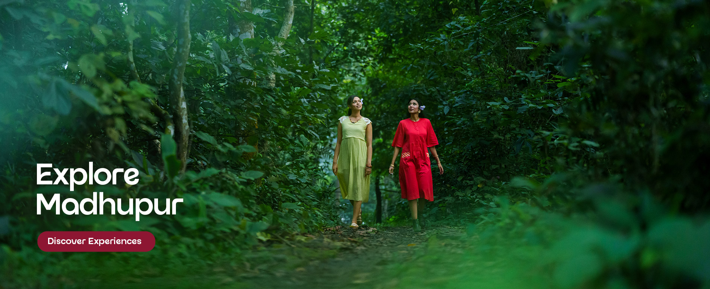

About Otithi
BRAC’s community-based tourism initiative — travel that welcomes you as a guest and strengthens host communities.
The name
“Otithi” is the Bengali word for guest — a word of deep hospitality in Bengali households. The initiative invites travelers into that spirit: not as tourists passing through, but as guests welcomed by host communities across Bangladesh.
Why community-based tourism
Otithi offers guided journeys that showcase cultural heritage and natural landscapes — popular places and quieter ones alike — with logistics handled so guests can focus on people and place.
Unlike extractive commercial tourism, each visit is designed so hosts are paid directly and traditions stay living practice, not scenery. The model was shaped through research with travelers, operators, and community partners.
Impact
Travel here is framed as a way to create livelihoods, support local jobs, and strengthen community economies — while guests experience authentic cultural immersion and responsible hospitality.
